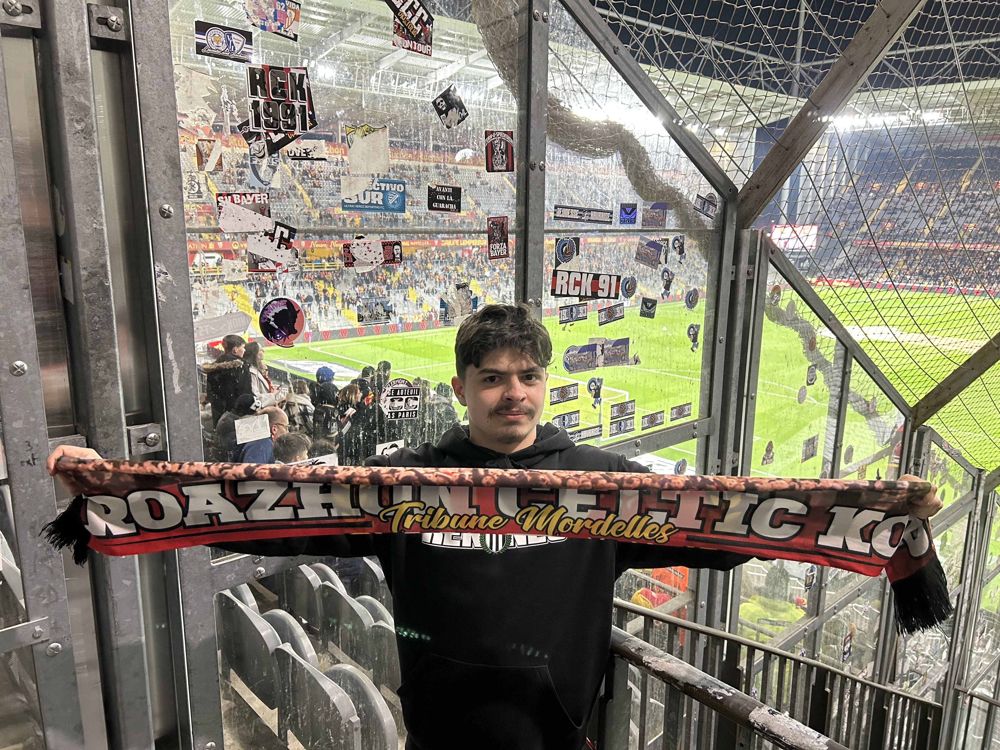

Présentation
Bonjour, je suis Nollan, immense fan du Stade Rennais, sympathisant au sein du RCK1991, et étudiant en BTS SIO option SISR (2ᵉ année).
Passionné par l'informatique et la culture ultra, je m'intéresse particulièrement à l' administration systèmes et réseaux, au support IT et à la cybersécurité. Je pratique régulièrement des Capture The Flag (CTF) afin de développer mes compétences en sécurité informatique et en résolution de problèmes.
Titulaire d'un Bac Professionnel Systèmes Numériques (option RISC), j'ai également effectué plusieurs stages au sein du service informatique de Carl Zeiss Vision France à Fougères, où j'ai participé à des missions de support, de maintenance et d'assistance aux utilisateurs.
